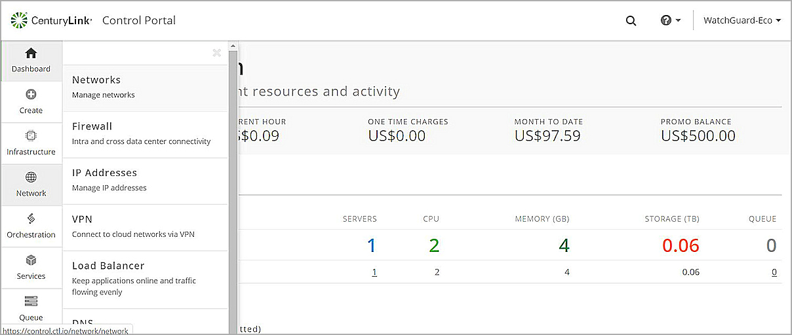

WatchGuard provides integration instructions to help our customers configure WatchGuard products to work with products created by other organizations. If you need more information or technical support about how to configure a third-party product, see the documentation and support resources for that product.
This integration guide describes how to configure a Branch Office VPN (BOVPN) tunnel between a WatchGuard Firebox and a CenturyLink Cloud site.
Integration Summary
The hardware and software used in this guide include:
- WatchGuard Firebox:
- Fireware v12.5.1
- CenturyLink Cloud
Topology
This diagram shows the topology used to test this integration.
Configure the Firebox
To configure a BOVPN on your Firebox, you must:
- Add a BOVPN gateway
- Add a new Phase 2 proposal
- Add a BOVPN tunnel
CenturyLink Cloud does not support all default Firebox BOVPN settings. The procedures in this guide indicate when you must change a default Firebox setting.
To add a gateway, from Fireware Web UI:
- Log in as a user with administrator credentials.
- Select VPN > Branch Office VPN.
- In the Gateways section, click Add.
- In the Gateway Name text box, type a name to identify this BOVPN Gateway. In our example, we use gateway.1.
- From the Address Family drop-down list, select IPV4 Addresses.
- In the Credential Method section, select Use Pre-Shared Key.
- In the adjacent text box, type the pre-shared key.

- In the Gateway Endpoint section, click Add.
The Gateway Endpoint Settings dialog box appears. - On the Local Gateway tab, from the External Interface drop-down list, select External.
- From the Interface IP Address drop-down list, select Primary Interface IPv4 Address.
- Select By IP Address.
- In the adjacent text box, type the public (external) IP address of your Firebox.
.jpg)
- On the Remote Gateway tab, select Static IP Address.
- In the adjacent text box, type the outgoing public IP address of the CenturyLink Cloud site.
- Select By IP Address.
- In the adjacent text box, again type the outgoing public IP address of the CenturyLink Cloud site.
 2.jpg)
- Click OK.
- In the Gateway Endpoint section, select Start Phase 1 tunnel when Firebox starts.

- Click the Phase 1 Settings tab.
- From the Version drop-down list, select IKEv1.
- From the Mode drop-down list, select Main.
- Click Add.
The Transform Settings dialog box appears. - From the Authentication drop-down list, select SHA1.
- From the Encryption drop-down list, select AES(256-bit).
- Keep the default SA Life value, which is 24 hours.
- From the Key Group drop-down list, select Diffie-Hellman Group 5.

- Click OK.

- Click Save.

Next, add a Phase 2 proposal:
- Select VPN > Phase 2 Proposals.
- Click Add.
- In the Name text box, type name of this proposal. In our example, we specify ESP-SHA1-AES256.
- In the Description text box, type a description for this Phase 2 proposal.
- From the Type drop-down list, select ESP (Encapsulating Security Payload).
- From the Authentication drop-down list, select SHA1.
- From the Encryption drop-down list, select AES(256-bit).
- Set Force Key Expiration to 1 hour.
- Keep the default values for all other settings.

- Click Save.
Next, add a tunnel:
- Select VPN > Branch Office VPN.
- In the Tunnels section, click Add.
- In the Name text box, type a name to identify this Branch Office VPN Tunnel. In our example, we use tunnel.1.
- From the Gateway drop-down list, select gateway.1.
- In the Addresses section, click Add.
The Tunnel Route Settings dialog box appears. - In the Local IP section, from the Choose Type drop-down list, select Network IPv4.
- In the Network IP text box, type the network IP address of the local network behind the Firebox.
- In the Remote IP section, from the Choose Type drop-down list, select Network IPv4.
- In the Network IP text box, type the network IP address of the local network for the CenturyLink Cloud site.
- Keep the default values for all other settings.

- Click OK.
- Click Phase 2 Settings.
- Enable Enable Perfect Forward Secrecy.
- From the drop-down list, select Diffie-Hellman Group 5.
- Select the default Phase 2 proposal and click Remove.
- From the drop-down list, select ESP-SHA1-AES256.
- Click Add.

- Click Save.

Configure CenturyLink Cloud
When you enable PFS in Phase 2, the Diffie-Hellman group is inherited from the Phase 1 settings.
To configure the CenturyLink network settings:
- Log in to your CenturyLink Control Portal.
- Select Network > Networks.

- To add a new network, click +network.

Next, configure the CenturyLink Site-to-Site VPN settings:
- Select Network > Site-to-Site VPN.
- Click +site-to-site VPN.
- In the Sites and Networks section, from the Control Portal Site drop-down list, select your Portal Site.
- To add the CenturyLink internal protected networks, in the Tunnel Encrypted Subnets section, click add network block.
- In the Site Name text box, type your site name.
- In the Device Type text box, type your device type.
- In the VPN Peer IPv4 Address text box, type your public IP address.
- To add the CenturyLink internal protected networks, in the Tunnel Encrypted Subnets section, click add network block.

- Click next: phase 1.
- From the Encryption Algorithm drop-down list, select AES-256.
- From the Hashing Algorithm drop-down list, select SHA1 (96).
- In the Pre-Shared Key text boxes, type the pre-shared key.
- From the Diffie-Hellman Group drop-down list, select Group 5.
.jpg)
- Click next: phase 2.
- Set PFS Enabled to ON.
.jpg)
- Click finish.

Test the Integration
- Log in to the Firebox Web UI.
- Select System Status > VPN Statistics.
- Verify the BOVPN tunnel is active.
- Verify the hosts behind the Firebox and behind CenturyLink Cloud can successfully ping each other.